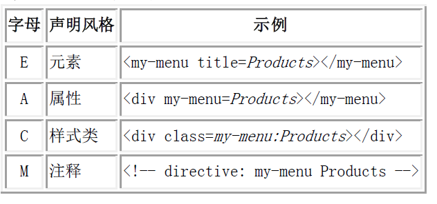

Directive的所有属性 *必填
angular.module("mydir.myTa").directive("myTa",function(){
return{
restrict:'E', *
replace: false,
template:'<div></div>',
templateUrl :"..url",
scope:false,
controller: function($scope, $element){ .... },
require: '^tabs', //另一个指令名字
transclude: true,
link :function(scope, element, attrs){},
compile:function($scope, $element){
return {
pre: function preLink(scope, iElement, iAttrs, controller) { ... },
post: function postLink(scope, iElement, iAttrs, controller) { ... }
}
}
}
})
compile阶段进行标签解析和变换，link阶段进行数据绑定等操作
-
restrict
- EACM的子集的字符串，它限制directive为指定的声明方式。如果省略的话，directive将仅仅允许通过属性声明：

replace
- 如果设置为true，那么模版将会替换当前元素，而不是作为子元素添加到当前元素中。（注：为true时，模版必须有一个根节点）
templateUrl
- 与template基本一致，但模版通过指定的url进行加载。因为模版加载是异步的，所以compilation、linking都会暂停，等待加载完毕后再执行。
scope
- 如果设置为：
true - 将为这个directive创建一个新的scope。
{}(object hash) - 将创建一个新的、独立(isolate)的scope。
<div my-directive name="myName" age="myAge" sex="male" say="say()"></div>
scope: {
name: '=',
age: '=',
sex: '@',
say: '&'
}
scope: {
name: '=name',
age: '=age',
sex: '@sex',
say: '&say'
}
| 符号 |
表示 |
| ＝ |
＝或＝attr- 指令中的属性取值为controller中对应$scope上属性的取值，可用于双向数据的绑定 |
| @ |
@或@attr- 指令中的取值为html中的字面量/直接量； |
| & |
&或＝&attr- 指令中的取值为Contoller中对应$scope上的属性，但是这属性必须为一个函数回调 |
controller
- controller 构造函数。controller会在pre-linking步骤之前进行初始化，并允许其他directive通过指定名称的require进行共享（看下面的require属性）。这将允许directive之间相互沟通，增强相互之间的行为。controller默认注入了以下本地对象：
$scope - 与当前元素结合的scope
$element - 当前的元素
$attrs - 当前元素的属性对象
$transclude - 一个预先绑定到当前转置scope的转置linking function :function(cloneLinkingFn)。(A transclude linking function pre-bound to the correct transclusion scope)
require
请求另外的controller，传入当前directive的linking function中。require需要传入一个directive controller的名称。如果找不到这个名称对应的controller，那么将会抛出一个error。名称可以加入以下前缀：
? - 不要抛出异常。这使这个依赖变为一个可选项。
^ - 允许查找父元素的controller
transclude
transclude-true自定义的标签内部的内容会保持不变